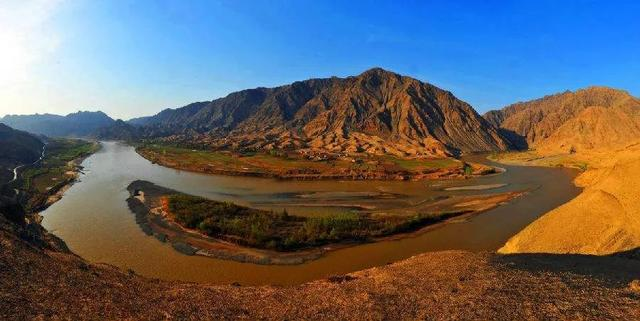
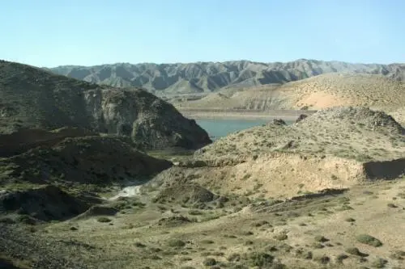
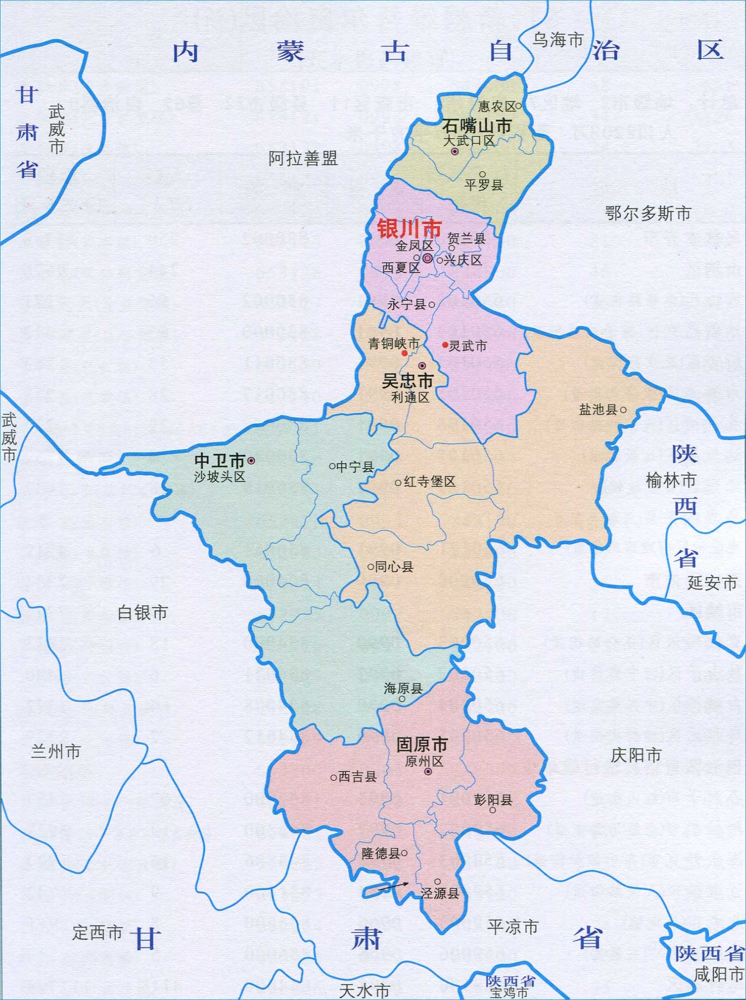

宁夏回族自治区
宁夏回族自治区，简称宁，首府银川。位于中国西北内陆地区，东邻陕西，西、北接内蒙古，南连甘肃，宁夏回族自治区总面积6.64万平方公里，位于四大地理区划的西北地区。
宁夏地形从西南向东北逐渐倾斜，丘陵沟壑林立，地形分为三大板块：北部引黄灌区、中部干旱带、南部山区。宁夏地处黄河水系，地势南高北低，呈阶梯状下降，全区属温带大陆性干旱、半干旱气候。
宁夏回族自治区下辖5个地级市（9个市辖区、2个县级市、11个县）。2020年第七次全国人口普查总人口为7202654人。2020年，宁夏实现地区生产总值3920.55亿元，比2019年增长3.9%。
推荐你来宁夏的原因
- 中国版图的几何中心
- 宁夏地处祖国西北内陆、黄河中上游，位于祖国大陆版图的几何中心位置，东邻陕西，西接甘肃，北与内蒙古相联。具有大漠风光、黄河文化、西夏古韵、回乡风情、丝绸之路构成独具特色的旅游资源。
- 黄河之水天上来 天下黄河富宁夏
- 黄河世代哺育着宁夏平原。千百年来，宁夏依黄河而发展、靠黄河而兴盛，形成了风格独具、特色鲜明的地域民族文化。黄河两岸，阡陌纵横，风光秀丽，百姓富足。位于青铜峡的黄河大峡谷，鬼斧神工，尽显黄河的瑰丽雄伟。
- 贺兰山下果园成 塞北江南旧有名
- 贺兰山中沉睡万年的史前岩画，被人们称为刻在石头上的历史记忆。贺兰山下静立千年的西夏帝王陵，布列有序，蔚为壮观。贺兰山东麓建设的百万亩葡萄种植基地和葡萄文化旅游长廊，已经成为宁夏旅游发展的新亮点。
- 六盘山上高峰 红旗漫卷西风
- 六盘山在宁夏的最南端，被誉为泾河之源、高原绿岛、天然氧吧、度假胜地、胜利之山。1961年9月，毛泽东书写长卷并将墨宝赠予宁夏人民，激励宁夏人民以“不到长城非好汉”的精神建设宁夏。
- 回汉亲如一家 清真美食多样
- 几百年来，回汉亲如一家，互学互帮互助，唱响了民族繁荣和团结之歌。中华回乡文化园有着回汉纽带、世界窗口之称。宁夏是清真美食发源地，手抓羊肉、羊杂碎、盖碗茶、臊子面闻名天下。
中国旅游的微缩盆景
宁夏，西北部一个不太能让人记住的地方，但是这里却自古至今有着自己的传奇。“天下黄河富宁夏”，宁夏是中国的一颗璀璨明珠，素有“塞上江南”的美誉。宁夏的美首先从名字开始。不论是“夏地安宁”，还是“宁静的夏天”，“宁夏”带给你的永远都是安详和美好。
宁夏以6.64万平方公里的土地，鬼斧神工般的布局了大山、河流、沙漠、森林、湿地、峡谷、草原、黄土高坡、丹霞地貌等除冰川以外几乎所有的自然资源类型，可谓“中国旅游的微缩盆景”。宁夏，不仅有着西部的苍凉、雄辉和辽阔，同时也兼备着江南水乡的旖旎、婉约和典雅。

春天，这里往往是大风伴着狂沙呼呼而来，在不经易间已是春色满人；夏天，这里很温柔，温度不高，清爽宜人，美味的水果让人欲罢不能；秋天，这里天高云阔，一幅塞北的美景；冬天，这里清冷而不凛冽，可以享受高山滑雪平湖滑冰。
地理环境
宁夏回族自治区位于中国西北部的黄河中上游地区，介于北纬35°14′-39°23′，东经104°17′′-107°39′之间。地形南北狭长，南北相距456千米，东西相距约250千米。
宁夏回族自治区海拔1100-1200米，地势从西南向东北逐渐倾斜。黄河自中卫入境，向东北斜贯于平原之上，顺地势经石嘴山出境。全区从南向北现出由流水地貌向风蚀地貌过渡的特征。宁夏地处黄土高原与内蒙古高原的过渡地带，地势南高北低。

宁夏回族自治区地处中国内陆，属温带大陆性干旱、半干旱气候。宁夏回族自治区平均年水面蒸发量1250毫米，变幅在800-1600毫米之间，是中国水面蒸发量较大的省区之一。
宁夏回族自治区地图 友情链接

历史沿革
1949年9月，中国人民解放军解放宁夏。
1953年11月27日，甘肃省人民政府通知，西海固回族自治区10月29日正式成立，4月1日，宁夏“金、灵、吴、同”回民自治区筹备委员会在吴忠市成立，与吴忠市人民政府合署办公。4月4日，宁夏省政府批准，惠农县成立两个相当于区级的回族自治区，即宝丰回族自治区和灵沙回族自治区。5月，中宁县耍义山乡（原四区六乡）划归同心县管辖。7月，宁夏“金、灵、吴、同”回民自治区筹委会改名为宁夏省河东回族自治区筹委会。
1954年4月21日，宁夏河东回族自治区正式成立，下辖吴忠市、金积县、灵武县和同心县。7月14日，内务部批准，银川市由6个区合并为4个区。9月，宁夏省建制撤销，并入甘肃省。11月3日，宁夏合并于甘肃后，原河东回族自治区和内蒙古自治区的行政区划不变，新设银川专区。
1957年7月15日，第一届全国人民代表大会第四次会议通过成立宁夏回族自治区的决议，以原宁夏省行政区域为基础成立宁夏回族自治区。
1958年10月25日，宁夏回族自治区正式成立。
2002年10月19日，撤销银川市城区、新城区和郊区，将银川城区分别设立银川市兴庆区、西夏区和金凤区；撤销石嘴山市石炭井区，并入大武口区。
2018年10月25日，宁夏回族自治区成立60周年。